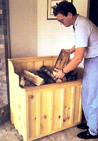
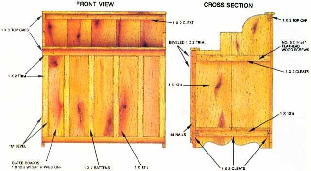

Tired fo wood-heating mess and late-night sojourns to the woodpile? Maybe you need a...
If you heat or cook with wood, you're probably well aware of how handy an easy-to-use and ample woodbox can be. Without one, wood burning often becomes a messy and tedious chore. Now, you may already have some ideas about what the perfect woodbox design is, but how about letting me fill you in on the details of the wood caddy I built? It takes up relatively little space, holds the wood handy to the fire, and controls the spread of chips, bark, and dust. With the following guidelines, you can vary the size, shape, and style of my model to suit your fancy, and you'll be assured of ending up with a handsome and durable piece of furniture.
This handcrafted wood chest is made from No. 3 pine boards, available from any lumberyard. I recommend that you use wide boards-1 X 12's if possible-for the front, back, bottom, and two end panels; 1 X 2's work well as trim, battens, and cleats; and rounded-over 1 X 3 stock can serve for the caps atop the front and back panels. These are convenient sizes to work with, but the design is flexible enough that you can really use just about any lumber you happen to have on hand.
The first step is to plan the size and shape of the box to suit the amount of wood you burn and the length of billet that your stove or fireplace accepts. Once you've settled on the basic dimensions, take a few minutes to lay out your lumber on the floor, so you can arrange for cuts that eliminate bad knots and make attractive patterns from the heart-and sapwood.
End panels are cut to a length determined by the height of the box, but you might work in some curves on the tops and bottoms of the boards to add a bit of flair to the design. I used paint buckets and inverted bowls as templates to draw the curves and then cut them on a band saw (a saber saw would work as well). If you need a box that's more than 11-1/4" from front to back (the actual width of a 1 X 12), you'll have to use cleats to hold a pair of boards together. One cleat toward the top and one at the height where the bottom will rest are sufficient.
The front panel consists of as many vertical, side-by-side boards as are necessary to achieve the desired box length. And, of course, the front panel height will be determined by the height and design of your end panels. Cut these boards to the proper length, and lay them out on the floor, so you can figure out the lengths of the trim pieces, the battens, and the cleat that the bottom will rest on.
Because the front panel butts against the end panels, the horizontal trim strips must be cut 1-1/2" longer than the width of the front panel to allow them to overlap the end panels. The vertical trim and battens fit between the horizontal trim strips, but you may want to leave a gap of an inch or two between the bottom trim piece and the floor. You may have noticed from the photo that I beveled (to about 15°) all my trim strips. This complicates assembly a bit, but I think it makes the box more attractive.
Make your back panel 1-1/2" wider than the front one, so it can overlap the end panels. You'll need two horizontal cleats that are 1-1/2" shorter than the back panel's width to hold the boards together. The lower will be the bottom rest. Once again, the height of the end panels determines the lengths of the 1 X 12's.
The box's bottom board is as long as the front panel-it will fit between the end panels and rest on cleats-and 3/4" narrower than the end panels. If the width requires two boards, you'll have to apply cleats to the bottom to hold them together.
Finally, cut two top caps to the length of the finished box. Plane all the edges of boards that will be exposed and sand the parts before you begin assembly.
It's easiest to put together each of the main panels first, and then join them to form the woodbox. During assembly, remember to drive 4d nails into the wood at a slight angle. A 4d is 1-1/2" long, which is exactly the thickness of two layers of one-by lumber. Driving them at an angle (or clipping off about a quarter inch with wire cutters) will prevent the points from poking through. Using 3d nails would avoid this problem, but the smaller fasteners wouldn't offer much strength. Even with the 4d nails, I recommend that you use glue on all the joints.
Use the 4d nails to secure the cleats to the front and rear panels. Nail from the back in both cases to hide the nailheads. If you have a multi-board bottom, apply the cleats from the underside with more 4d nails.
For extra strength, attach the end panel cleats with No. 6 X 1-1/4" flathead wood screws. To prevent the wood from splitting, drill lead holes in the cleats and boards and then countersink the cleats so the screwheads will be flush with the wood's surface.
You're now ready for the final assembly, which consists of joining the end, rear, and front panels to each other and to the bottom board with 6d nails. (I recommend that you drill lead holes for all the 6d nails to prevent splitting.) Begin assembly by fastening the end panels to the bottom board, and then place this assembly so that the rear is facing up. Position the back panel on the ends and bottom, and nail it in place. Now flip the box over and repeat the procedure with the front panel.
With the basic structure secure, you can apply the trim and battens to the front with 4d nails pounded in from the back. I put the bottom trim piece on first, followed by the two vertical sections. Then I placed the top trim piece and filled in with the battens. (When you're nailing from behind, it's helpful to hold a block of wood against the front to keep the pans from moving.) Finally, I affixed both caps, allowing a slight overhang on the front and rear of the chest.
If you wish, use a nail set to push any exposed nailheads below the wood's surface, and then fill the depressions with wood putty. Once this material has set, you can apply finish. I used three coats of a 50/50 mixture of linseed oil and polyurethane varnish, which I painted on and allowed to soak in. Then I removed the excess finish from the surface with a rag. (Note: Rags used to wipe off oil are extremely combustible. They should be burned immediately or stored in an airtight metal container prior to proper disposal.)
When you bring your woodbox into the house, bear in mind that the National Fire Protection Association recommends that all combustible objects be kept at least three feet from the fire. Once it's positioned, fill the container with seasoned wood. A woodbox shouldn't be used to dry wood; that's a job better accomplished in an airy woodshed.
Now you can sit back and relax, knowing that you won't have to make any barefoot dashes to the woodpile tonight. As I finish writing this, I'm enjoying the crackle of dry locust that I recently plucked from my wood-box. The billets were seasoned as fence post tops for at least a hundred years-now they're almost too good to burn. But darned if I'm going outdoors to get some other wood to use. Not on a cold night like this one.
Maybe tomorrow . . . if the sun's out.
|
 |
 |
|